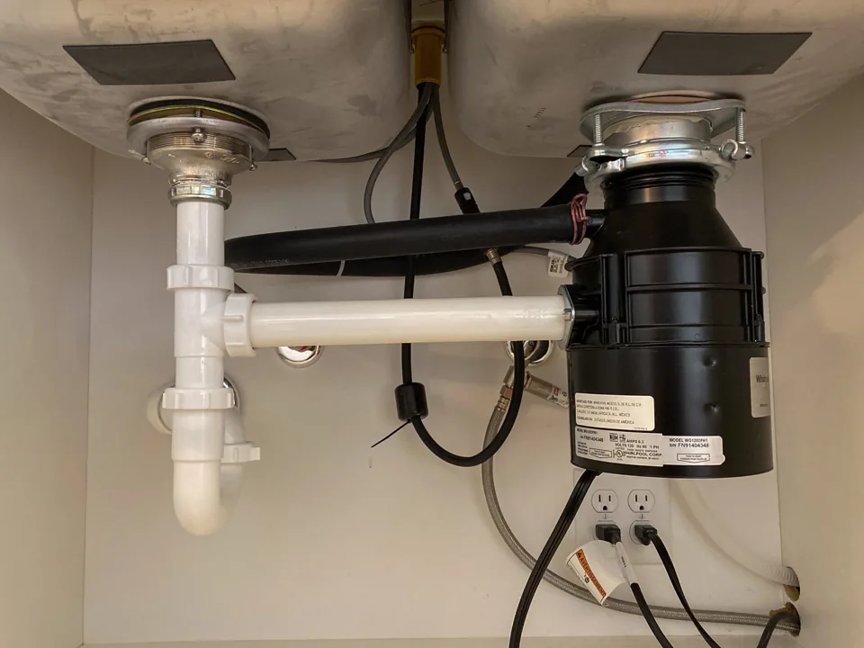

Humming or not turning on
A jam, overload protection or a power issue can interrupt operation. The symptom needs checking before assuming the motor has failed.
The goal: identify whether a repair is practical before replacing the unit.
Humming, leaking or suddenly not working? Get help finding the problem and deciding whether a repair or a replacement makes sense.
Talk directly with Dustin. Prefer to call? (949) 371-6423

The sound, leak location and existing connections help determine the next step. Describe what is happening; you do not need to diagnose it yourself.
A jam, overload protection or a power issue can interrupt operation. The symptom needs checking before assuming the motor has failed.
The goal: identify whether a repair is practical before replacing the unit.
A leak can begin at the sink mount, drain outlet, dishwasher hose or disposal body. Water can travel down the outside and hide its starting point.
The goal: find the source and distinguish a connection repair from a unit problem.
If replacement is the practical choice, Dustin can install a compatible customer-supplied garbage disposal at the existing location.
The goal: confirm fit, reconnect the existing setup and check for leaks and normal operation.
A standard replacement uses the existing mounting assembly, electrical connection and drain configuration. Check compatibility before buying if you are unsure which unit fits.
Ask about your replacement →The disposal and any required cord or adapter are supplied separately. Mounting or drain changes, additional parts and repairs outside the standard swap need a separate estimate. This service does not include new circuits, moving the disposal to a new location or soldered pipe work.
Call, text or use the estimate form. Include your city or ZIP code and whether the unit hums, stays silent, leaks or has stopped draining normally.
If convenient, add the model number, a photo under the sink or a link to the replacement you are considering. Photos are helpful, but optional.
Dustin reviews the symptom and the existing setup with you.
Get the repair or replacement recommendation and estimate before proceeding.
Complete the agreed work, then check operation and the affected connections.
Primary service areas are Irvine, Newport Beach, Newport Coast, Corona del Mar and Laguna Beach. Also serving Lake Forest, Mission Viejo, Aliso Viejo, Laguna Niguel, Dana Point and surrounding areas.
Need another repair while Dustin is there? Explore the other home repair services and describe the jobs together when requesting your estimate.
Garbage-disposal client review
“Lastnight he came out after hours and replaced my garbage disposal. Dustin is very thorough, very professional, and most of all He’s very reasonable.”
A jam or a leaking connection may be repairable. A problem inside the disposal may make replacement more practical. Dustin checks the symptom and the existing installation, then explains the repair or replacement options before work begins.
Request a written estimate for your installation. Repair cost depends on the cause. Replacement labor is quoted for a compatible customer-supplied unit using the existing mounting assembly, electrical connection and drain configuration. The disposal, any required cord or adapter, and additional parts or connection changes are separate from standard replacement labor.
You supply the replacement unit, but checking compatibility before ordering can avoid a mismatch. Share the existing model and the replacement you are considering. The mounting system, cabinet clearance, drain height and electrical connection all need to fit; a required power cord or adapter may be sold separately.
A jam can cause humming without normal operation, but the sound alone does not identify the fault. Turn the unit off and avoid repeatedly trying to run it. Never put a hand inside the disposal. Dustin can assess whether a repair is appropriate or replacement makes more sense.
No. Water may come from the sink mounting assembly, the discharge connection, the dishwasher inlet or the unit itself. A drip at the bottom can also start above and run down. Finding the actual source comes before deciding on a connection repair or a replacement.
Not necessarily. The restriction may be in the connected drain rather than the disposal. Describe whether one sink basin, both basins or other fixtures are affected. A replacement is not a promise to clear a separate drain blockage.
Ultra Home Repair is based in Woodbury, Irvine. Primary service areas are Irvine, Newport Beach, Newport Coast, Corona del Mar and Laguna Beach. Also serving Lake Forest, Mission Viejo, Aliso Viejo, Laguna Niguel, Dana Point and surrounding areas. Contact Dustin to confirm your location and scheduling.
For model-specific troubleshooting and safety, follow your manufacturer’s instructions. References: InSinkErator leak guidance and noise and safety guidance. Ultra Home Repair is an independent service provider.
Describe the disposal problem and ask Dustin about the next step.